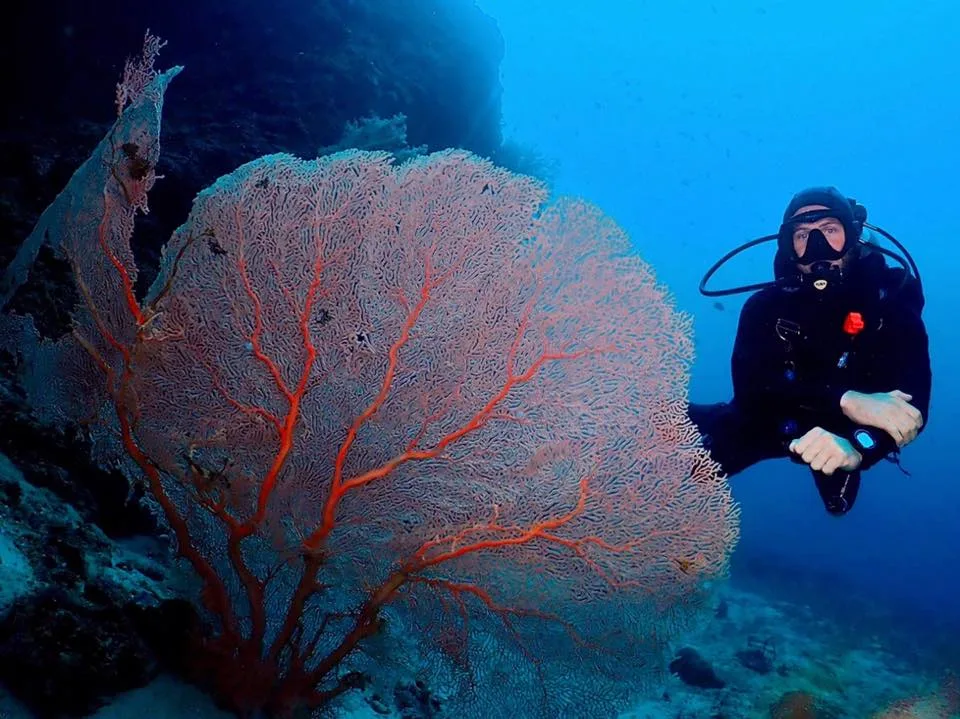
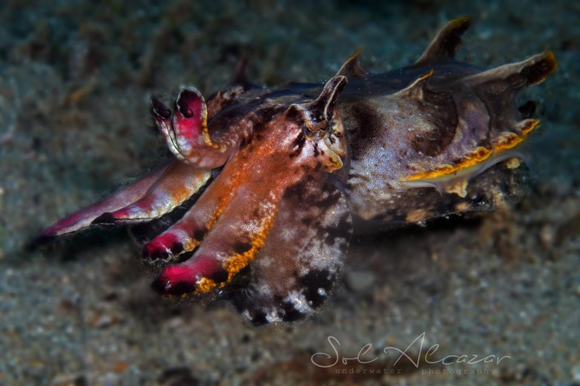
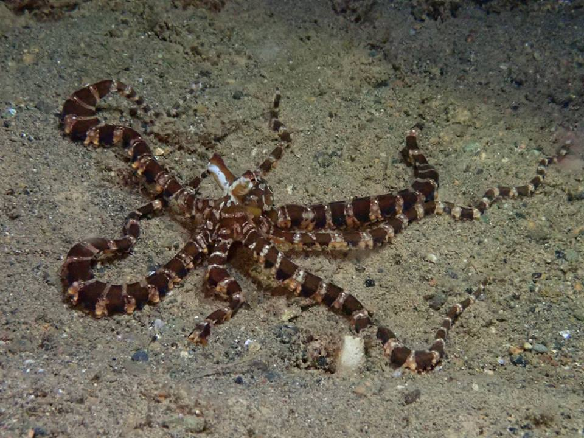
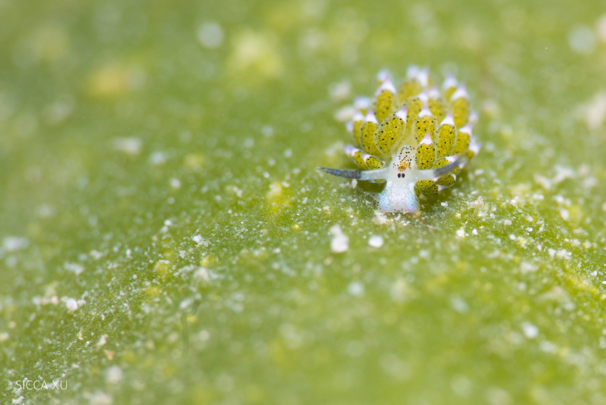
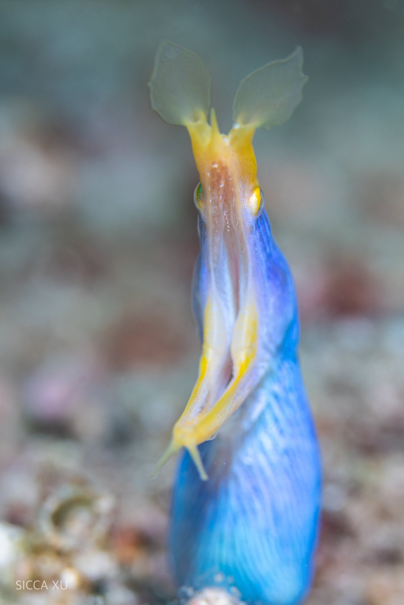
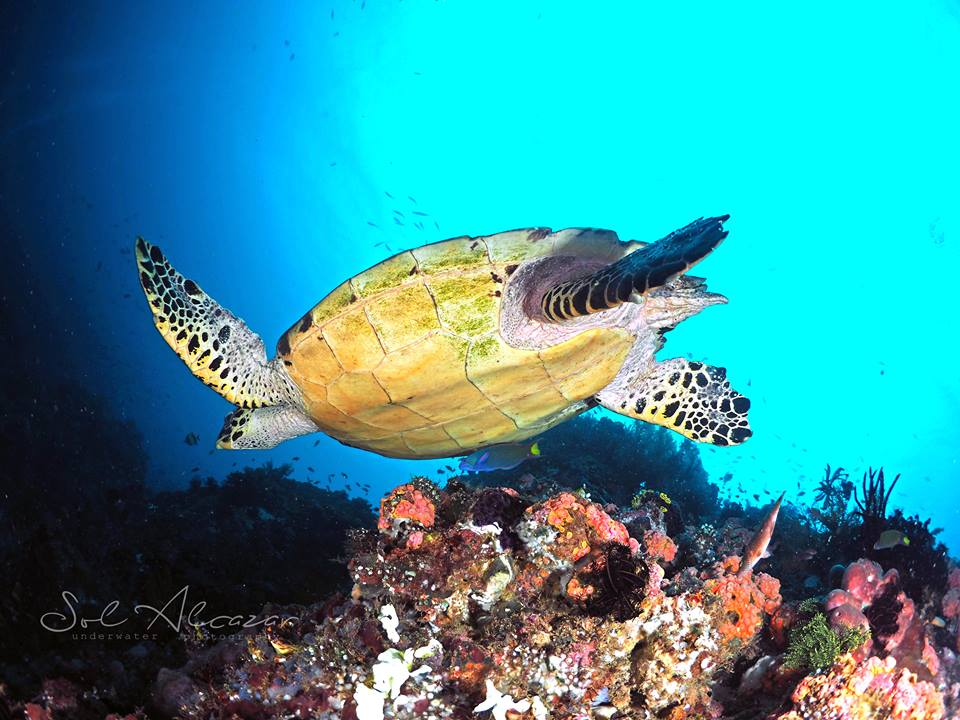
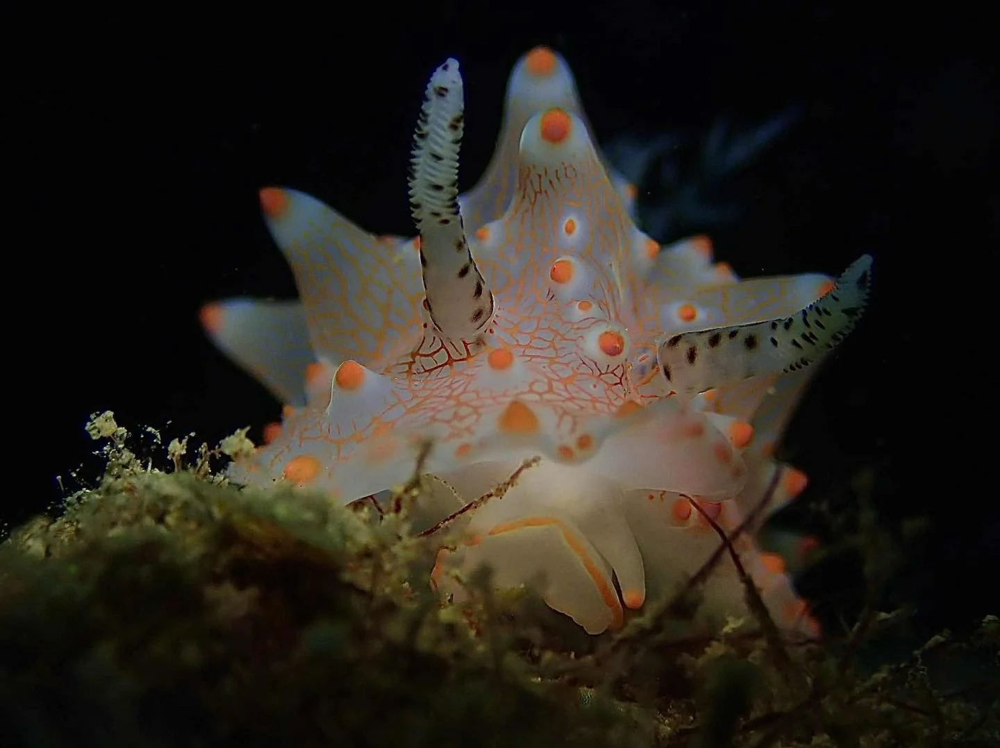
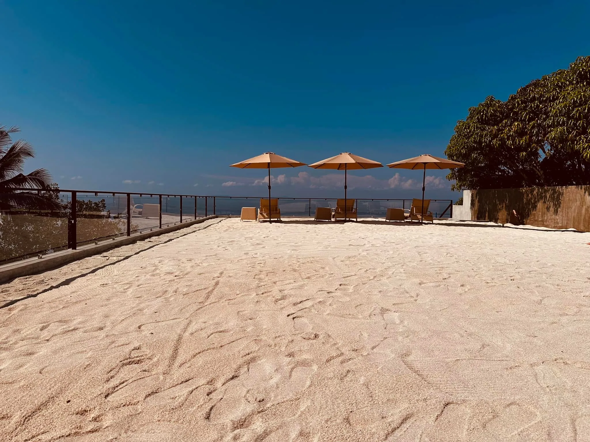
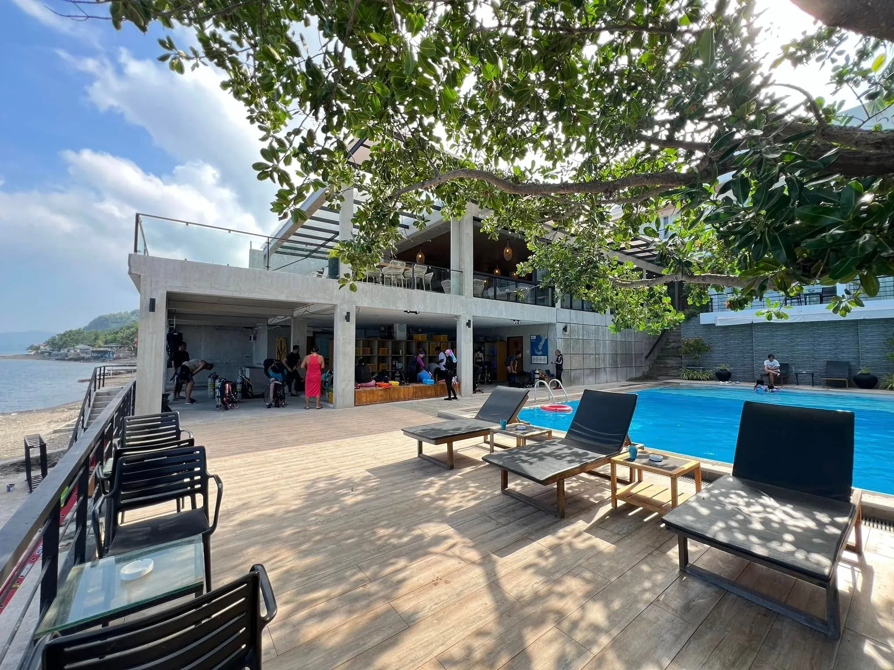

Anilao
Anilao, in Mabini, Batangas, is where diving in the Philippines began. It is a two to three hour drive south of Manila and still one of the best macro and coral destinations in Asia.
What the diving is like
More than thirty sites sit within a short boat ride, so you can comfortably fit in three or four dives a day without long crossings.
The mix is unusual: genuinely healthy coral gardens alongside world-class macro. Night diving is excellent, and the sites are close enough that an evening dive is easy to arrange.
What you are likely to see
Anilao is a nudibranch destination first and foremost, and the variety is the draw: leaf sheep sea slugs, Tryon's and Willan's chromodoris, and Halgerda batangas, which is named after the province you are diving in.
Beyond the slugs there is flamboyant cuttlefish, wunderpus octopus, peacock mantis shrimp, blue ribbon eels and hawksbill turtles, over sea fans and coral that is in genuinely good condition.
Who it suits
Macro shooters, and anyone who wants to log a lot of dives in a short trip. It also works well for course students, because the sites are sheltered and close in.
Where we stay
Casa Escondida, an ocean-front PADI 5 Star IDC resort with its own jetty, nitrox and equipment rental on site.
Photographs courtesy of Casa Escondida.







